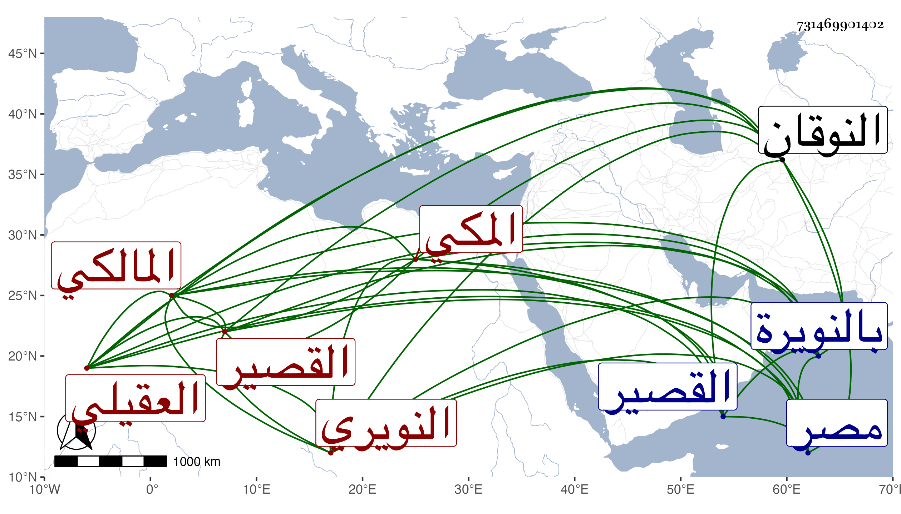

0902Sakhawi.DawLamic.ITO20230111-ara1.EIS1600.731469901402
Biography ID: 731469901402
750
محمد بن عبد الرحمن بن عبد العزيز بن محمد بن أحمد بن عبد العزيز بن القسم بن عبد الرحمن علم الدين بن الرضي بن العز بن الشمس أبي الغيث بن الشهاب العقيلي النويري ثم المكي المالكي قريب الخطيب أبي الفضل وهو بلقبه أشهر . ولد قريبا من سنة أربع عشرة وثمانمائة بالنويرة من الأعمال البهنساوية بالوجه القبلي ، وتحول حين بلوغه سن التمييز إلى مصر فأقام تحت نظر محمد والد الزين طاهر ، وقرأ القرآن عند ولده الآخر النور علي وأكمله عند زين العابدين ابن عم الشهاب بن أبي السعود في مكتبه بالمشهد وحفظ عنده العمدة والرسالة في الفقه ثم قطعة من ابن الحاجب ومن ألفية ابن ملك وعرض بعضها على الشمس البرماوي والتفهني والبساطي وشيخنا ، واشتغل في الفقه أولا عند طاهر ثم الزين عبادة والبساطي في آخرين ، وحضر اليسير من الأصول والعربية عند البساطي والقاياتي وطائفة وكذا قرأ على ابن الهمام والشهاب الأبشيطي في العربية وانتفع بأبي القسم النويري وتميز قليلا وسمع الحديث على الزين الزركشي وفاطمة الحنبلية وقريبتها عائشة ابنة العلاء وشيخنا وكتب عنه من أماليه ولازمه مدة وابن عمار وطائفة ، وتنزل في صوفية سعيد السعداء وقرأ بها الحديث وكذا تنزل في غيرها من الجهات وحج غير مرة بعضها من القصير وكذا جاور مرارا ثم استوطنها من سنة ست وخمسين ولازم الحضور عند القاضي عبد القادر المالكي وجود القرآن على النور على الديروطي . ومات بها في يوم الجمعة ثامن عشري شعبان سنة أربع وسبعين وكان حسن العشرة متوددا قانعا رحمه الله وإيانا .
